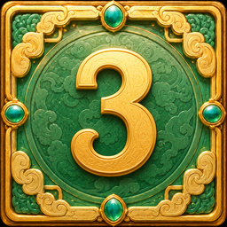
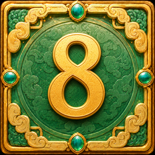
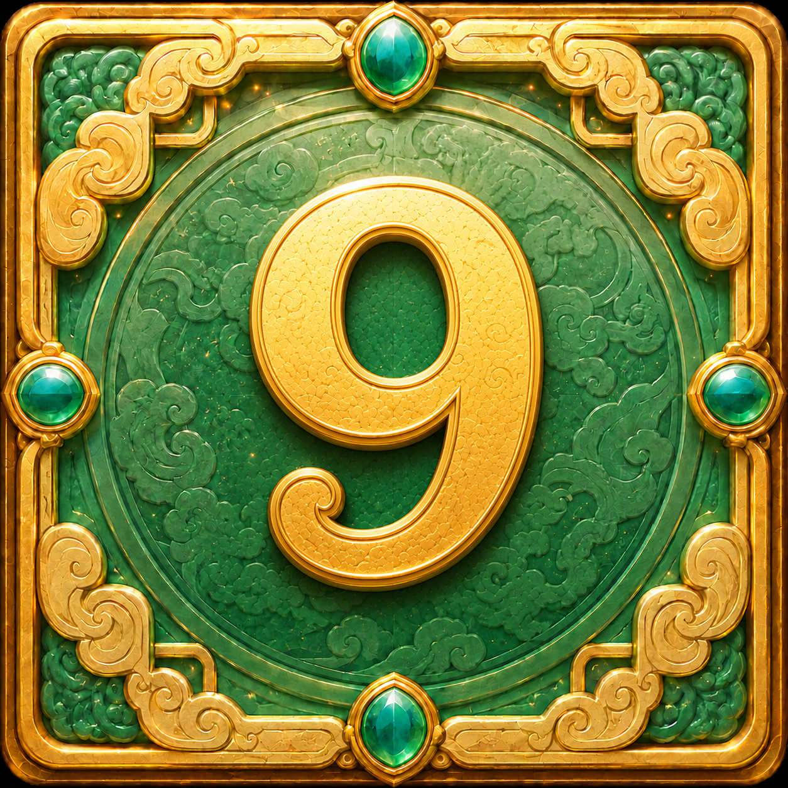

3×3 盤面，每列獨立判定射龍門。每局扣 bet，平均分配到 3 列。

＜ ＜
3 < 5 < 8 → 穿門！贏得 bet/3 × 倍率 + 歸還本金
中間牌 = 左牌 → 碰壁！扣 bet/3

＞9 > 8 → 在門外！扣 bet/3
| 門類型 | Gap | 倍率 |
|---|---|---|
| 極窄門 | 1 | ×10 |
| 窄門 | 2~3 | ×5 |
| 普通門 | 4~7 | ×2 |
| 寬門 | 8+ | ×1 |
| 同值門 | — | ×1 |

盤面隨機出現龍珠 Scatter，每個 +1
碰壁 -1，同值碰壁 -2
收集滿 10 個可選擇進入 Free Game 或 Bonus Game
中間牌 = 左牌 → 碰壁！Scatter -1
三張同值 → 同值碰壁！Scatter -2
3 列全為窄門或極窄門時有機會觸發！